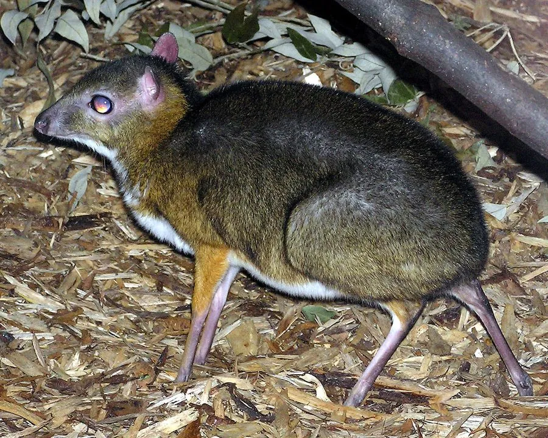

哺乳动物 · 动物界
小鼷鹿 Tragulus kanchil

东南亚体型最小的偶蹄类，体重仅约 2 公斤、没有角，雄兽有外露獠牙，夜行于热带雨林，中国云南有分布。
- 分类
- 门脊索动物门纲哺乳纲目偶蹄目科鼷鹿科属鼷鹿属
- 栖息环境
- 热带雨林和季雨林的林下灌丛，靠近水源
- 地理分布
- 泰国、马来西亚、印度尼西亚等东南亚地区，中国云南西双版纳有分布
- 保护级别
- IUCN 无危（LC）；中国国家一级保护动物
物种志
小鼷鹿体长 42–48 厘米，肩高约 20–25 厘米，体重 1.5–2.5 千克，是体型最小的偶蹄类之一。它的身体小巧，四肢细长，毛色为红褐至黄褐色，腹部白色，喉部有浅色纵纹；没有角，雄兽的上犬齿延长成獠牙，露在唇外。
小鼷鹿分布于东南亚的泰国、马来西亚、印度尼西亚等地，在中国云南西双版纳有分布，栖息在热带雨林和季雨林的林下灌丛。它夜行性，单独活动，以树叶、果实、嫩芽和草为食，遇险时会跳入水中躲避。雌性妊娠期约 140–150 天，每胎 1 仔，寿命约 12–14 年。由于栖息地丧失和偷猎，小鼷鹿数量下降，被列为无危；在中国，它属于国家一级保护动物，种群十分稀少。
形态与习性
- 食性树叶、果实、嫩芽与草
- 体长42–48 cm，肩高 20–25 cm
- 体重1.5–2.5 kg
- 寿命12–14 年
- 繁殖妊娠约 140–150 天，每胎 1 仔
- 特征雄兽上犬齿外露成獠牙，没有角
趣味知识
- 小鼷鹿体重仅约 2 公斤，是体型最小的偶蹄类之一。
- 雄兽没有角，却有外露的獠牙状上犬齿。
- 它在中国仅分布于云南西双版纳，是国家一级保护动物。